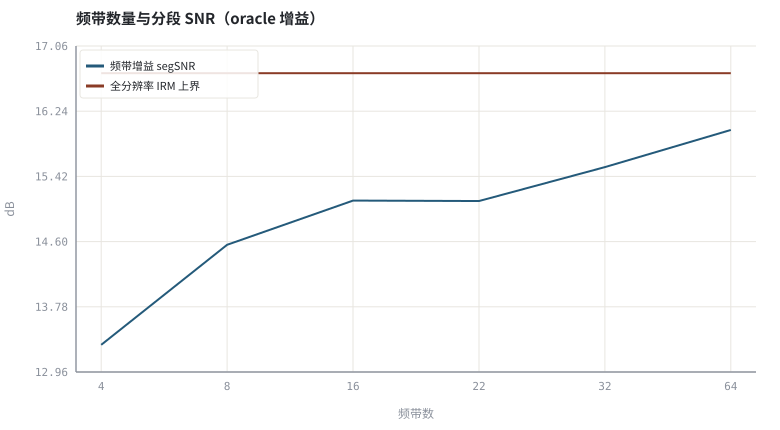
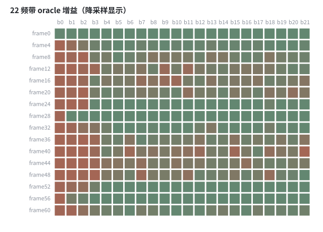

第 23 章神经噪声抑制：从 RNNoise 到 DNS Challenge
把降噪器压缩到几个频带增益，是「神经方法能跑在端侧」的关键一步。
本章位置：第 19 章 · 时频掩码：IBM / IRM / CRM 与监督学习形式化～第 22 章 · 复数域与相位：DCCRN、深度滤波与时域模型 给出掩码、数据与骨架，本章把它们落回 ANS 任务；第 24 章 · 神经 AEC 与回声/噪声联合抑制 把远端参考接进网络做神经 AEC，第 26 章 · 联合 3A：多任务、级联与端到端建模 再合并三个任务。
把几百个频率箱聚成 22 个频带，等于把回归输出从 256 维降到 22 维：模型更小、更快，但丢掉了带内细节——一条典型的容量—精度折中曲线。
- 能说明混合 DSP / 神经网络降噪的分工方式。
- 能解释频带增益相比全分辨率掩码的算力与精度折中。
- 能实现频带增益估计并扫描频带数量的影响。
- 能说清 DNS Challenge 的评测协议与常见指标。
§知识点地图
每个知识点都配了 1～2 个扩展学习链接；本章完整资源清单见 扩展学习。
| # | 知识点 | 扩展学习 | 状态 |
|---|---|---|---|
| 1 | 混合 DSP / DNN 架构 | Microsoft DNS Challenge ↗ · DNSMOS ↗ | 正文已覆盖 |
| 2 | RNNoise 频带增益 | Automatic gain control ↗ · ffmpeg dynaudnorm ↗ | 正文已覆盖 |
| 3 | Bark / 梅尔频带 | Microsoft DNS Challenge ↗ · DNSMOS ↗ | 正文已覆盖 |
| 4 | 逐帧 GRU 与状态 | Microsoft DNS Challenge ↗ · DNSMOS ↗ | 正文已覆盖 |
| 5 | DNS Challenge | Microsoft DNS Challenge ↗ · DNSMOS ↗ | 正文已覆盖 |
| 6 | DNSMOS 无参考评分 | Microsoft DNS Challenge ↗ · DNSMOS ↗ | 正文已覆盖 |
| 7 | 频带数与失真 | Microsoft DNS Challenge ↗ · DNSMOS ↗ | 正文已覆盖 |
| 8 | 实时算力预算 | RFC 3550 RTP ↗ · WebRTC 官网 ↗ | 正文已覆盖 |
§23.1RNNoise 的「小」是设计出来的
RNNoise 不预测几百个频率箱的掩码，只预测约 22 个 Bark 频带的增益，再用传统 FFT 滤波器组执行。网络只负责「每个频带此刻该压多少」这一低维决策，特征提取、频带划分与合成仍由 DSP 完成。因此它能在很小的算力下实时运行，并成为 ffmpeg arnndn 的模型来源。
| 层 | 由谁做 | 维度 | 原因 |
|---|---|---|---|
| 特征 | DSP | 频带能量 + 差分 + 音高特征 | 手工特征稳、便宜 |
| 决策 | GRU / 小型网络 | 约 22 个增益 | 让网络只学最难的部分 |
| 执行 | DSP 滤波器组 | 全分辨率谱 | 避免网络逐 bin 输出 |
| 平滑 | 一阶 IIR | 跨帧增益 | 抑制音乐噪声 |
§23.2DNS Challenge 把问题规模化
Score = w₁·语音质量 + w₂·噪声抑制 + w₃·可懂度 （P.835 三维主观 / DNSMOS 代理）
- 数据：大规模干净语音 + 噪声 + RIR 合成，覆盖多种 SNR 与混响（第 20 章 · 训练数据合成：RIR、噪声、SNR 配比与数据泄漏）。
- 约束：赛道通常限定因果、最大延迟与实时因子，离线模型不能参赛。
- 评测：ITU-T P.835 的语音/噪声/总体三维主观分，配合 DNSMOS 等无参考模型做快速迭代。
- 陷阱：只优化 DNSMOS 容易奖励过度降噪；必须同时看语音失真与可懂度。
实验用 oracle 频带增益（由干净/带噪谱能量算出）扫描频带数，目的是量化「降维带来的信息损失」这一条，而不是复现任何具体模型的分数。
§Python 实验
实验 23-1 · 频带数量对降噪精度的影响与频带增益热力图
#!/usr/bin/env python3
# -*- coding: utf-8 -*-
"""用 oracle 频带增益扫描 4～64 个频带，比较分段 SNR 与全分辨率 IRM 上界。
全部语音 / 噪声 / 房间冲激响应均为代码合成信号，仅用于教学演示机制与量级。
"""
from __future__ import annotations
import math
import pathlib
import random
import statistics
import sys
import time
_here = pathlib.Path(__file__).resolve()
for _p in _here.parents:
if (_p / "tools" / "dsp.py").exists():
sys.path.insert(0, str(_p / "tools"))
break
from dsp import (SAMPLE_RATE, fft, hann, stft, istft, magnitude_db, spectrum,
white_noise, tone, chirp, synthetic_speech, rir, convolve,
fft_convolve, delay, clip, normalize_peak, rms, rolling_rms,
smooth, db, energy_db, snr_db, erle_db, seg_snr_db,
scale_align, si_sdr_db, lufs_approx,
write_wav, read_wav, wav_info)
from chart import Chart, heatmap, BLUE, RED, GREEN, AMBER
FIG = _here.parents[1] / "fig"
AUDIO = _here.parents[1] / "audio"
FIG.mkdir(exist_ok=True)
AUDIO.mkdir(exist_ok=True)
random.seed(7)
# ---- 参数区 ----
N = 8000
N_FFT, HOP = 256, 128
NOISE_AMP = 0.035
BANDS = (4, 8, 16, 22, 32, 64)
FLOOR = 0.10
# ---- 计算与作图 ----
rng = random.Random(7)
clean = synthetic_speech(rng, N)
noise = white_noise(rng, N, NOISE_AMP)
noisy = [clean[i] + noise[i] for i in range(N)]
fs, fn = stft(clean, N_FFT, HOP), stft(noise, N_FFT, HOP)
HALF = N_FFT // 2
def band_index(k, B):
kk = k if k <= HALF else N_FFT - k
return min(B - 1, kk * B // HALF)
def enhance(B, record=False):
frames = stft(noisy, N_FFT, HOP)
rows = []
for idx, (ry, iy) in enumerate(frames):
rs, is_ = fs[idx]
rn, in_ = fn[idx]
ps, py = [0.0] * B, [0.0] * B
for k in range(N_FFT):
b = band_index(k, B)
ps[b] += rs[k] ** 2 + is_[k] ** 2
py[b] += ry[k] ** 2 + iy[k] ** 2
gains = [max(FLOOR, min(1.0, math.sqrt(ps[b] / (py[b] + 1e-12)))) for b in range(B)]
for k in range(N_FFT):
g = gains[band_index(k, B)]
ry[k] *= g
iy[k] *= g
if record:
rows.append(gains)
return istft(frames, N_FFT, HOP, N), rows
scores, outputs = [], []
for B in BANDS:
out, _ = enhance(B)
outputs.append(out)
scores.append(seg_snr_db(clean, scale_align(out, clean)))
full_frames = stft(noisy, N_FFT, HOP)
for idx, (ry, iy) in enumerate(full_frames):
rs, is_ = fs[idx]
rn, in_ = fn[idx]
for k in range(N_FFT):
g = math.hypot(rs[k], is_[k]) / (math.hypot(rs[k], is_[k]) + math.hypot(rn[k], in_[k]) + 1e-9)
ry[k] *= g
iy[k] *= g
irm = istft(full_frames, N_FFT, HOP, N)
irm_score = seg_snr_db(clean, scale_align(irm, clean))
_, rows22 = enhance(22, record=True)
c = Chart(FIG / "23-bands.svg", "频带数量与分段 SNR（oracle 增益）", xlabel="频带数", ylabel="dB",
xticks=[(i, "%d" % B) for i, B in enumerate(BANDS)])
c.line(range(len(BANDS)), scores, BLUE, label="频带增益 segSNR")
c.line(range(len(BANDS)), [irm_score] * len(BANDS), RED, label="全分辨率 IRM 上界")
print("频带图:", c.save())
mat = rows22[::4]
heatmap(FIG / "23-gains.svg", mat,
["frame%d" % (i * 4) for i in range(len(mat))],
["b%d" % j for j in range(22)],
title="22 频带 oracle 增益（降采样显示）", vmin=0.0, vmax=1.0, annotate=False)
print("增益热力图:", str(FIG / "23-gains.svg"))
write_wav(AUDIO / "23-noisy.wav", normalize_peak(noisy))
write_wav(AUDIO / "23-22band.wav", normalize_peak(outputs[3]))
print("频带数→segSNR: " + " ".join("%d=%.2f" % (B, s) for B, s in zip(BANDS, scores)))
print("全分辨率 IRM=%.2f dB | 22 频带相对上界差=%.2f dB | SAMPLE_RATE=%d" %
(irm_score, irm_score - scores[3], SAMPLE_RATE))操作：对照频带数曲线与全分辨率上界；观察增益热力图里哪些频带长期被压低。 预期与判读：频带数越多越接近全分辨率 IRM，但增益维度、网络输出与算力同步上升。RNNoise 选择约 22 个频带，正是在这条曲线上取的一个工程折中。
改参数看趋势：把 FLOOR 从 0.10 改成 0.30，低 SNR 频带不再被深压，指标与听感同时变化。 文件位置：part5/23-neural-ns/code/23-neural-ns.py


23-noisy.wav
带噪输入（16 kHz / 16-bit 单声道，代码合成信号，不是真实录音）
23-22band.wav
22 频带 oracle 增益的输出（16 kHz / 16-bit 单声道，代码合成信号，不是真实录音）
代码块右上角可一键复制；仓库里的 code/*.py 由 tools/extract_code.py 从这些代码块自动抽取。脚本只用标准库、固定 random.seed(7)，运行后写出 fig/*.svg 与 audio/*.wav；批量运行用 ./tools/run_python.sh。
§可选真机命令片段
以下命令不参与批量运行，需要本机自行安装对应工具。滤镜是否可用取决于本机 ffmpeg 版本与编译选项，请先用 ffmpeg -filters / ffmpeg -version 自查，并以 https://ffmpeg.org/ffmpeg-filters.html 与各自官方文档为准；本书不假定任何特定版本具备某项能力。
自查本机 arnndn 是否可用（RNNoise 模型需自备）
ffmpeg -hide_banner -filters | grep arnndn && ffmpeg -hide_banner -h filter=arnndn | head -20说明：arnndn 加载 RNNoise 训练出的 .rnnn 模型；是否编译进本机、参数名与模型格式请以本机输出与 https://ffmpeg.org/ffmpeg-filters.html#arnndn 为准。
定位 DNSMOS 评测脚本
git clone --depth 1 https://github.com/microsoft/DNS-Challenge && ls DNS-Challenge/DNSMOS/说明：DNSMOS 是无参考神经 MOS 评分；请以其 README 与许可为准，本书实验不下载模型权重。
§本章参考资料
按本章知识点挑选的精读资料；更多检索入口见 扩展学习。
§相关开源工程
下列工程仅作技术参照，版权与许可证归各自维护者所有。本书实验不依赖它们，也与之无从属关系。
§常见误区
- 把 oracle 频带增益的分数当成 RNNoise 的实测成绩。
- 只优化 DNSMOS，忽略语音失真与可懂度。
- 忽略跨帧状态，逐帧独立决策会产生增益抖动。
- 把离线两遍处理的结果当作实时赛道成绩。
§习题与思考
- 估算 B 个频带增益相对全分辨率掩码节省了多少输出维度。
- 解释为什么频带划分常按 Bark / 梅尔尺度而非等宽。
- 设计一个同时报质量、可懂度与噪声抑制的评测表。
§扩展学习
继续检索
- Google Scholar：neural noise suppression DNS Challenge DNSMOS ↗
- arXiv：neural noise suppression DNS Challenge DNSMOS ↗
- GitHub：neural noise suppression DNS Challenge DNSMOS ↗
全书链接总表见 FFmpeg Filters 文档 ↗ 与 附录 A.7；滤镜是否可用请以本机 ffmpeg -filters 为准。
§延伸阅读与内链
- 第 24 章 · 神经 AEC 与回声/噪声联合抑制 神经 AEC；第 26 章 · 联合 3A：多任务、级联与端到端建模 联合 3A；第 30 章 · 泛化、鲁棒性与评测陷阱 泛化与评测陷阱。